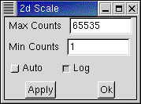

Used to change the way colours are applied to counts in the map display. Note that the colours themselves are not changed by this function (that can be done by selecting a theme from Colours in the main menu). Only the association between counts and colours is changed.
The total range of counts from Min Counts (default=1) to Max Counts (default=65535) is divided into 32 divisions and a colour is associated with each. The division can be done logarithmically (that is the default) or linearly. If "Auto" is turned on, Max Counts is computed and set. During acquisition, turning on Auto will cause a performance degrade and is best avoided.
Actaually Scale should be rarely invoked. The colour scale chosen by default is usually the best with many different spectra.